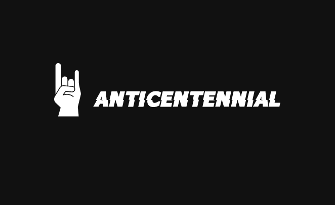

inicio
sobre nosotros
galeria
tienda
contacto
Las bandas del fin del milenio que hicieron historia de la A a la Z
A
B
C
D
E
F
G
H
I
J
K
L
M
N
O
P
Q
R
S
T
U
V
W
X
Y
Z
AC/DC
Ciudad de surgimiento de la banda